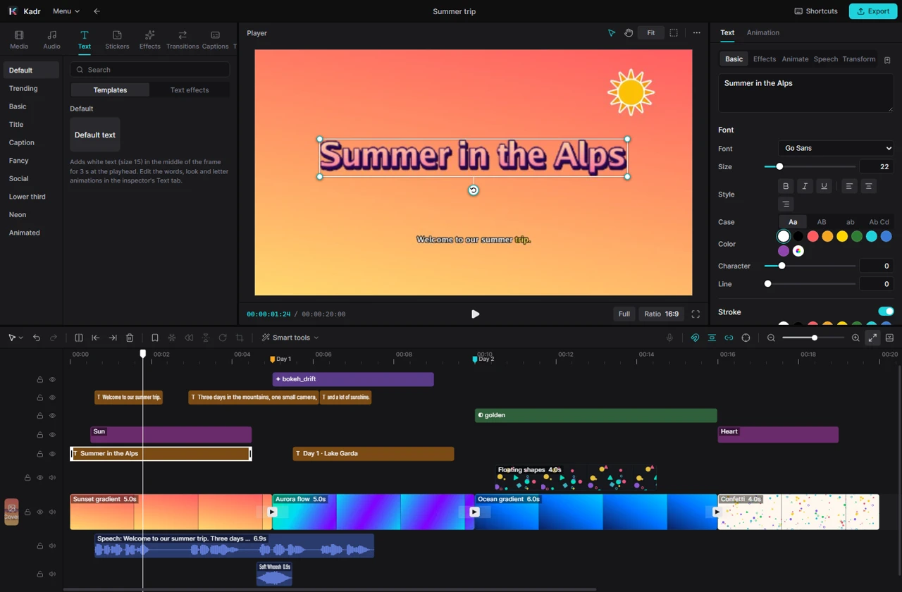

For humans
Kadr user guide
Kadr is a free video editor for Windows that works like CapCut: a library of media and effects on the left, a player in the middle, settings on the right and a timeline at the bottom. This guide explains every part of it in plain words — no technical knowledge needed.

Start here
New to Kadr? Read these three pages in order. Together they take about ten minutes.
Popular tasks
When something goes wrong
The Troubleshooting & FAQ page covers the usual suspects: the Windows SmartScreen warning, a missing FFmpeg, a slow preview and features that need extra software. All keyboard shortcuts are listed on one page.
Want an AI to do the editing for you? Click AI in the top bar and ask the built-in assistant. Every button in Kadr is also a command that outside AI agents such as Claude Code can use too, and you can watch them edit in the window — that is covered in the separate documentation for AI agents.